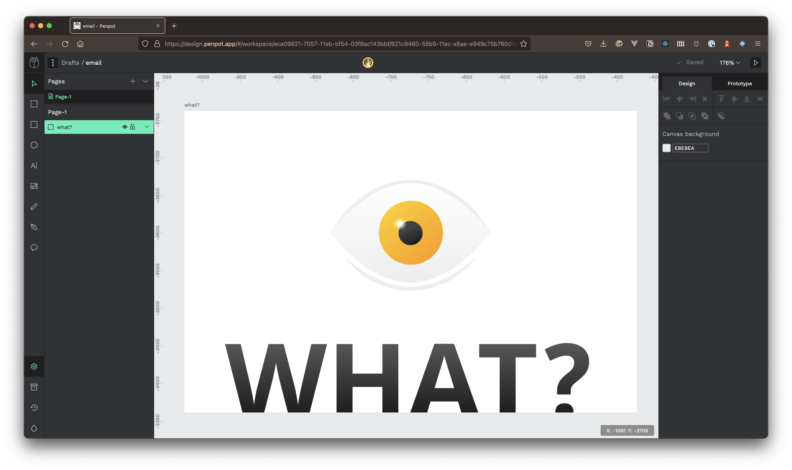

Penpot?
Vuelve a la homeCómo que no sabes lo que es Penpot? Seguro que sí.
Es una aplicación de diseño y prototipado desarrollada por Kaleidos Open Source, vamos, en "casa". Tiene esta pinta:

Es de código abierto, se basa en SVG y funciona en un navegador. Cómo te quedas?
Que una herramienta así funcione en un navegador es ya un mínimo que permite que diseño y desarrollo hablen en los mismos términos y nos independicemos de una vez de los sistemas operativos; nada de esta aplicación solo la tenemos para mac porque patatas.
El uso de un estándar abierto como SVG es poca broma nivel "inspecciono el código y ya es SVG". A la hora de exportar te ahorras unas serie de transformaciones que empeoran la calidad/peso del archivo final, porque ya es SVG. Así rápido, se me viene a la cabeza degradados, máscaras y transparencias, que todavía hoy suelen salir reguler; usando un formato estándar, ya lo tienes.
Entonces, Chuck, ya lo estás usando?
Pues lo voy a empezar a usar en proyectos pequeños, personales o para las sesiones de Maquetando con Chuck!
Hasta ahora me he acomodado mucho al Auto Layout de Figma, aunque sé que llegará a Penpot y molará.
Sí que hay cosas que hecho en falta para que harían que me sintiese más cómodo:
Una aplicación nativa o incluso con un electrón:
No tanto porque la necesite de verdad porque valoro poder abrir un navegador y trabajar, pero me da como seguridad ver un menú horizontal y me mola ver el icono.Una herramienta de lupa:
Hay dos tipos de diseñadores, los de herramienta lupa y los otros. Entiendo las decisiones que han tomado y las opciones de zoom que hay. Bien, pero yo quiero una lupa, y un zoom que no me amplíe la interfaz.Poder borrar los colores de la librería del archivo:
Ahora los puedes añadir, pero no sé cómo borrarlos cuando igual por rendimiento ha tardado un poco más y has añadido el mismo color 7 veces.
Sí que se echan en falta mejoras en rendimiento (en la combinación de formas se nota mucho), en flujos o incorporación de nuevas herramientas. La aplicación está en Beta y todo esto llegará.
Pero lo usamos o no?
Sí, por varias razones, aún sabiendo que es versión Beta todavía.
A mi me llama la atención porque que es de código abierto, producto nacional y que ya en beta las bases son buenas.
Lo del producto nacional es también poca broma porque pareciese a veces que todo lo bueno lo hacen los demás.
Penpot es un producto con un equipo fuerte y va a ser súper interesante seguir el progreso.